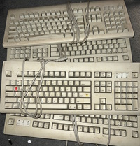
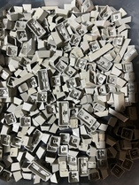
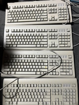
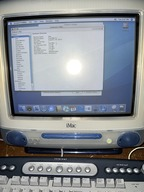
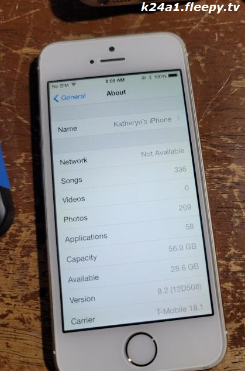

Welcome!
Hello, and thank you for stopping by!
This is where I put most of the information about my projects, writeups about computers, and personal stories on my blog. I've come across as a good help resource with older computers and Macs. My writeups have helped at least a few people with certain machines and parts for them. I aim to provide good resources and information for computers both newer and older, and more niche systems too. Mainly, I work with x86 hardware, but I have also worked on PowerPC and 68k Apple computers. Yes, I know I may sound weak to the masses with the fact I haven't touched more special hardware, but hey... where are you going to find a cheap SGI workstation in this day and age?? I'd also like to mention most people do have contemporary PCs and Macs, so it's easy for me. I'd like to own some special hardware but personally it's not my forte.
Navigation is as easy as the menu on top! Click one of the 6 buttons to explore different parts of the site!
Late-Breaking News
Want to catch up with what's going on?
Blog Page Deprecation
I have thought of something I wish I thought of a long time ago... integrate the blog page into the home page.
I feel as if the home page has been lacking in content and now I realize why. I would like this to be more of the center of attention for first-time viewers along with returning viewers, so I've made things less complicated.
I have also finished a writeup on the HP Pavilion 15z-eh series of laptops which you can read on the docs page. I'd like input on this since not a lot of information exists outside of people complaining on HP forums. Also, I am getting an Athlon 64 X2 on the Manchester core later today, which I will test in a Pavilion zv6000 to look into potential dual-core support for this laptop. UPDATE: The 64 X2 is not fully supported after extensive testing; only one core is detected and the system does not have the processor microcode.
If you have suggestions to what other pages I can add to the site, let me know.
February 15th, 2023 10:46AM
k24a1 Website Version 2.1 - What's New?
I've finally done something I only ever do a few times... update my website.
Here's a list of changes I've made with the site:
-Made some consistency changes across the board
-Phased out the weird "k24net" branding in favor of the k24a1 name. Yes, I did name my internet presence after a honda engine... and I regret doing that.
-Random bylines on the menu bar for each page!
-Actually updated the art page a bit for once in a while.
-Added older blog posts using what I could recycle with the old website design. I've been meaning to do this for a while but never got around to it.
-Re-added the favicon. I don't know why I omitted it/why it went missing.
-Some other minor revisions. Not much to write home about.
I am very busy with college classes and have nowhere as much free time as I did with High School where I'd work on the site in my free time. I've also gotten back into gaming so I've been doing more of that in my room. Nothing fancy, just the 7th gen consoles for now.
Hopefully this update will at least make this site better in some way. I only just realized how inconsistent it really was.
February 2nd, 2023 9:43PM
An AppleDesign Adventure: How I Saved 4 AppleDesign Keyboards from the Landfill
Last weekend has been insane. First I had to do several double takes seeing a red-shouldered hawk in my area, I managed to find a black and white 5" TV at Goodwill which I thought wasn't even accepted, and my dad managed to give me a free flat-panel TV and a couple of Blu-Ray players. The very next day was an even bigger surprise... I managed to find 4 AppleDesign Keyboards that were set for the landfill. Oh, not so fast! I knew I had to do something.



I thoroughly cleaned all these out by scrubbing ALL the plastic casing pieces with dish soap and a vegetable brush. It got all the dirt and grime off, and then I tried cleaning the cables with some IPA but I may need something stronger because there's still some grime and dirt on the cables. These were absolutely filthy when I got them. Now they all work perfectly and feel great to type on.
Yes, these feel good to type on, no joke. This is apple's best rubberdome keyboard in my opinion. They have a sense of feeling somewhat tactile while not being as noisy as older mechanical keyboards. I'd say it's a great cheap alternative to the AEK II. Just look for one made in Thailand; I think that's where the NMB AppleDesign KB's were made since all 4 of mine were made there too. People don't like these keyboards, but I think they've just tried the inferior Alps versions.
February 2nd, 2023 10:56AM
Late to the party, and a JVC I'Art.
Happy (late) 2023, readers. Not a lot really happened and I have not felt very motivated to keep this site updated as of late...
I'm starting my 2nd semester of college, and it's going to be a tough one. I've got 5 classes to take care of now but I am on my way to get an associate's in science. I've also determined my new HP 15z-eh200 laptop has a failing SSD! How fun.
Lately, I picked up a JVC I'Art 27F703 for the low, low price of FREE! Yep, I finally got a good CRT. I liked my 20AF43 but I wanted something a few inches bigger. It's got quite a lot of hours on it, but I expected that. The TV still looks great after nearly 21 years which says a lot...
And to the people who call shadow mask CRTs a miserable little pile of scanlines: Shut up. I swear, PVM/BVM and trinitron enthusiasts/elitists will shill the most expensive and sought-after CRTs when they do not realize the availability situation in someone's area. I was not able to find a good Sony FD Trinitron/WEGA (pronounced "VEGA" and not "WEGA", idiots...) and it took me a while to come across this JVC I'Art TV. They are DAMN CLOSE in quality compared to trinitrons and they are probably the best shadow mask CRTs ever made. Yes, you can use "best CRT" and "shadow mask" in the same sentence. Shocking, I know...
Here's a photo of the TV in action. Interestingly enough, THAT had to be the best picture of the TV I took that I had saved... I love Super Paper Mario and its quirky writing, and it was simply way ahead of its time in that regard. Half an hour before I wrote this, I was DAMN NEAR CLOSE to beating Wracktail in the pit of 100 trials, died, and I'm absolutely livid. I guess 2 Life Shrooms was NOT enough for the NEARLY 1 HOUR I SPENT GETTING THROUGH THE FIRST 99 TRIALS.
Don't ignore JVC TVs if you see one locally or on the curb (unless it's damaged). The D-series and the I'Arts are some top-tier sets, and can show you that you don't even need a trinitron to get a high-quality picture out of a CRT. Also, if the owner has a JVC DVD theater system, take that too; the internal speakers of almost all CRT sets aren't particularly great; I managed to get a JVC XV-THA30 DVD system that supported a 5.1 channel speaker setup. Unfortunately, 3 of the speakers went missing so I was only able to set up stereo audio with a subwoofer. Still great, and it has outstanding quality.
I don't update this site often, but I promise... I am damn well still alive and kicking. I'm just a ditzy dork. *wink wink*
January 18, 2023 6:20PM
I may or may not have acquired another iMac.

This here is an Indigo iMac DV from 2000, and unlike iTek... I actually know something about this computer. Well... all the specs would be a no-brainer if you left it stock, but at least I know what an old hard drive is supposed to sound like.
This unit I admittedly paid quite a bit for on eBay, and right now it has a 500MHz PowerPC G3 processor with 512MB of RAM and a 60GB hard drive. The optical drive situation is always going to suck, but luckily I have seen someone find a way to adapt a newer optical drive to the ol' (un)reliable. Turns out Apple just tacked a bunch of pins to the side for extra power on the 50-pin ODD connector, so it's still IDE at heart. As for that stupid connector that does intercept the board... we actually don't need to worry since any JAE/Slimline DVD drive to IDE adapter can work provided you know where to place the cable. I'm still going to have to figure that out myself.
I thought of adding a fan, perhaps buying a Disk-on-Module too. Maybe if I'm lucky enough, I can get someone to swap a 7410 in. Other than that, I finally have an iMac in "Tsubasa Blue"! I also have a Bondi Blue coming in someday.
September 14, 2022 9:44AM
Welp. It's been a while.
I got a few computers, one of which runs Windows ME surprisingly.. fine. It's a complete HP tower set from 2000 given out by ford motor company via PeoplePC or whatever... I can't think well today, more on that later. I also bought myself a new laptop and even a couple of old iMacs just for the hell of it.
The bad news? I knocked off a fan blade while dusting out my computer. It's loud as hell. The good news about this is that I finally have a good case I can swap the whole system into, an old server tower enclosure. I never particularly liked my Musetex case for many reasons, the main one being that it has no optical bays. Also, RGB is overrated. I like my systems professional.
September 12, 2022 9:36AM
A new and improved website, at last!
It's about time I made this site better. Yes, I am sure most people will complain to me that it doesn't run on IE4 or whatever, but this HAD to be done. Also, fancy blog format. I didn't write this site entirely by myself, but I did want to make a site closer to what I would have initially envisioned.
August 22, 2022 11:20AM
HP Pavilion zv6000
I have acquired yet another HP Desktop Replacement, the Pavilion zv6000! Writeup is on the docs page. :)
July 17, 2022 5:17PM
I guess I'm an adult now.
Guess I haven't talked here in a while. Why? I graduated High school and I have also been preparing for college. Let me tell you... I barely get a chance to update this stuff. Hell, most of my motivation to update the site came from me using my old laptops and such throughout school to write this damn thing simply because I had free time and they were not exactly powerful for more fun stuff. That computers page alone took me HOURS to write... and usually I feel demotivated and/or simply fucken tired because that's just how my brain works.

Anyway... I have been getting back into old iOS devices simply because I have a lot of them, some of which are locked because Apple automatically enables Find My iPhone... yuck! Some of my favorite devices are my white 64GB iPad 2 and white 64GB 4S, but my most favorite is my white 32GB iPhone 4 with blobs for 4.3.5, 5.0.1, and 5.1.1! I also have a gold 64GB iPhone 5S that still runs iOS 8.2, which unfortunately suffers from a baseband bug. Wish I could update that baseband once the right exploits are found, which may take YEARS... that thing flies and honestly it would make a great backup device if location services were fully functional.
Hopefully all is well with the people visiting my site. This year has been a fucking roller coaster thus far.
July 8, 2022 6:03AM
Older entries

{kind=link}
{kind=link}
{kind=link}
{kind=link}
{kind=link}